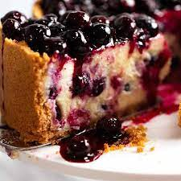

Blueberry Cheesecake

Description
To say this Blueberry Cheesecake is bursting with blueberries is an understatement! Baked to achieve that elusive
light-yet-rich creamy cheesecake filling, studded with blueberries inside and smothered in an incredible glossy
blueberry sauce topping. It's magnificent!
Ingredients
- Any Plain Crackers
- Butter
- Flour
- Vanilla
- Cream Cheese
- Sour Cream
- Sugar
- blueberries
- Eggs
- Lemon Zest
Steps
- Preheat oven to 160 degrees C
- Line inverted base and sides with butter
- Break up biscuits roughly by hand and place in a food processor, then pour crumbs into the prepared cake
tin. Use a spatula to roughly spread it out over the base and up the walls.
- Use a stand mixer (with paddle) or handheld beater to beat the cream cheese until just smooth, no longer
than 20 seconds on speed 4. (You do not want to aerate cheesecake filling too much as it causes cracks when
it bakes)
- Add flour, beat for 5 seconds on speed 4 until just incorporated.
Add vanilla, sour cream, sugar and lemon zest. Beat until just combined
- Add eggs one at a time - beat for 5 seconds on speed 4 in between each. After the last egg, beat as needed
until batter is smooth - but stop beating immediately once smooth.
- Stir in blueberries with a rubber spatula. Pour into prepared crust.
- Bake for 70 minutes. The top should be a bit puffed, very light golden brown, not cracked, and near
perfectly flat. It should jiggle slightly when you gently shake the pan
- Place 1 cup of blueberries (125g/4oz), vanilla, sugar and lemon juice in a saucepan. Stir then bring to
simmer over medium heat. Simmer for 7 minutes until blueberries breakdown.
- Spoon onto cheesecake so it's completely covered - you'll have maybe 1/2 cup sauce left, good for touch ups.
Refrigerate 2 hours
- Slice and serve. Bon Appetit!